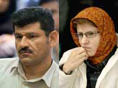

|
|
|
Browsing
Contact Us |
Campaigners |
Face to Face |
Tribune |
Interview |
News |
On the Web |
One Million |
Report
Farsi | Français | German | Italian | Spanish | العربية Also in this section
|

Jila Baniyaghoub Released on BailMonday 6 July 2009 Jila Baniyaghoub Released on Bail According to the site of Women’s Forum, Jila Baniyaghoub was released on a bail order in the amount of 100 million Tomans (roughly $100,000) on Wednesday August 19, 2009, following the unrest after the presidential elections. Baniyaghoub was arrested on June 22, along with her husband Bahman Ahmadi Amouie, who is a journalist. There is not news on the possible release of Ahmadi Amouie. According to reports, Ahmadi Amouie is being held in solitary confinement. Jila Baniyaghoub and Several Other Imprisoned Women’s and Human Rights Activists and Journalist Visit with Family While in Detention August 18, 2009 According to the Green Wave of Freedom site, several women’s rights activists, human rights activists and journalists imprisoned as a result of recent unrest following the presidential elections were allowed to visit with their family members yesterday August 17. Mondays are visitor’s days at Evin prison, and several of these individuals were visiting with family members after having spent weeks in detention without any clarification as to the reason for their arrest or the situation of their case. According to this report, the individuals who were allowed to have a visit with their family members included: Jila Baniyagoub, Shiva Nazar Ahari, Mahsa Amrabadi, Somaiyeh Tohidlou, Isa Saharkhiz, Keyvan Samimi, Mohammad Ghoochani, and Mohammad Reza Jalaie Pour. Shiva Nazar Ahari’s family were able to visit with her for the first time in the two months since her arrest. Jila Baniyagoob Visits with Family in Prison August, 2009 Change for Equality: On Monday August 10, the family of Jila Baniyagoub had the opportunity to visit with Jila, who is a journalist and a member of the One Million Signatures Campaign. This was the second of such visits since Jila and her husband Bahman Ahmadi Amouie were arrested in their home on June 22, 2009. In an interview with the site of Focus on Iranian women, Jila’s mother explained that: “Jila was in good spirits during the visit. I was able to visit with her along with my daughter. The visit lasted for about 20 minutes. In the visit Jila explained that her interrogations were continuing but that she is being kept in a prison cell along with Shiva Nazar Ahari. According to Jila they are both in good spirits.” Jila’s mother has requested that officials take action to clarify the situation of Jila and Bahman. Additionally, Bahman Ahmadi Amouie was able to contact his family by telephone on the 14th of August. According to a report by the site of Focus on Iranian Women, Bahman informed his family that his interrogations had come to a close and that it is hoped that his case would be referred to the courts next week. He has not been able to visit with his family since his arrest on June 22. Shiva Nazar Ahari who is a human rights defender and student activist was arrested over two months ago in her place of empoloyment. Despite calling a home on a couple of occasions in the first few weeks of arrest, her telephone contact with her family has since stopped. According to reports from those released from prison, Shiva’s interrogations continue. She has not been allowed the opportunity to visit with her family since her arrest over 60 days ago. Continued Detention of Journalists Jila Bani-Yagoub and Bahman Ahmadi Amoui July 6, 2009 Focus on Iranian Women: More that two weeks have passed since the arrest of two journalists, Jila Bani-Yaghoub and Bahman Ahmadi Amoui and there is still no news about them.
 Jila Bani-Yaghoub contacted her family Evin prison where she is reportedly being held on one occasion during the first week of her arrest. Bahman Ahmadi Amoui has not contacted his family at all and they are worried about his condition. His family has tried in vain to acquire information about his status from legal authorities. His family demands from the authorities that Bahman be allowed to contact his family. In her brief telephone conversation with her mother during the first week after her arrest, Jila Bani-Yaghoub spoke with her mother very hastily. Her mother says she was not able to understand where the authorities have taken her daughter and her husband. Despite her persistent inquiries from the Evin prison personnel, revolutionary courts and other legal institutions, she has not been able to find out about her daughter’s whereabouts or condition. Jila Bani-Yaghoub’s mother says that her daughter and her husband, Bahman Ahmadi-Amoui, though journalists, were not employed in any newspapers over the past year. As such, she says that she cannot understand what their alleged crime could be. “Not knowing where they are detained is worrisome” says Jila Bani-Yaghoub’s mother. Besides being a journalist, Bani-Yaghoub is a member of the One Million Signatures Campaign and a women’s rights activist. Amoui is a journalist who reports and writes about political and economic developments in Iran. Jila Bani-Yaghoub and Bahman Ahmadi Amoui were detained following unrest after the results of the elections were reported. They are among several hundred journalists and political and human rights activists who were arrested after the unrests. It is believed that these political and human rights activists and journalists are being held in Section 209 of Evin prison, though little information has been provided about their location or the charges pending against them. Scores of ordinary citizens too have been detained because of their alleged participation in protests. |